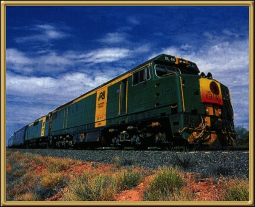

Photographer: Unknown
If you're heading up to the Northern Territory, make the trip on the Ghan! It takes a bit longer - but it's worth every minute. I've made this trip four times now and every time is fantastic. The train itself is superb, especially if you take a sleeper (which I always do), and it really gives you a chance to SEE the country that you're passing through.